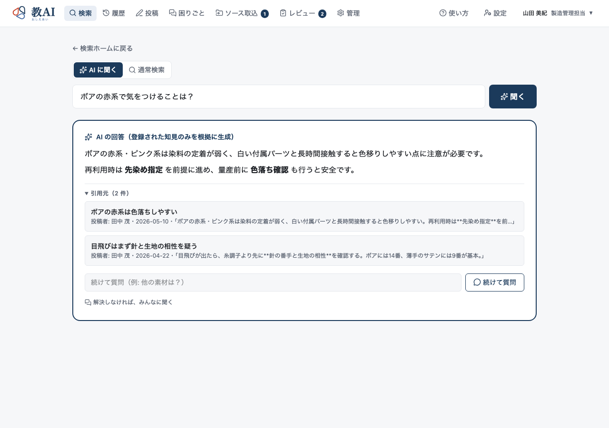
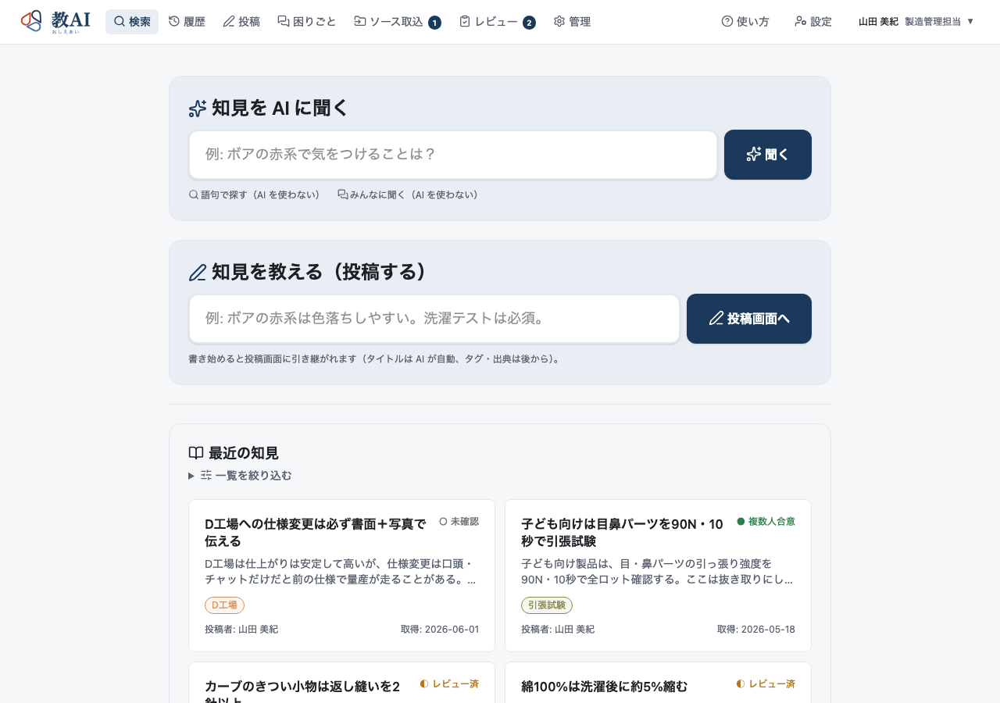
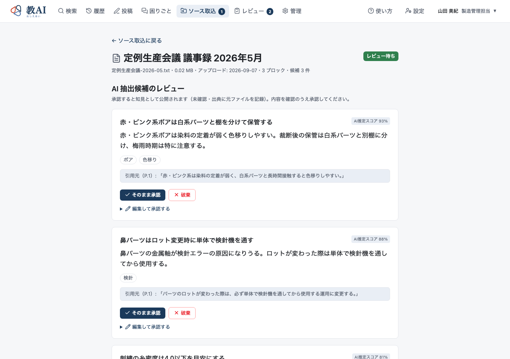
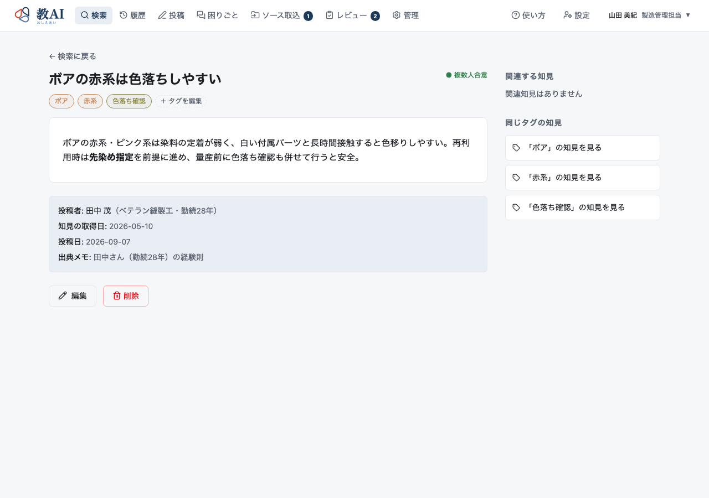

CASE 01
担当者が休むと、確認が止まる。
手順書はある。でも、例外の判断や過去の経緯は、いつも同じ人に聞いている。
マニュアルに書ききれない現場のコツ。
報告書に埋もれた、過去のトラブル対応。
教AIは、経験の投稿や議事録などから知見を蓄積し、
次に困った人が、根拠を確かめながら使えるようにするサービスです。
同じ質問でベテランの作業が中断される。
過去に解決した問題を、別の担当者がまた調べ直す。
引き継ぎ資料に書ききれなかった判断の理由が、担当者とともに失われる。
その繰り返しを、少しずつ減らしていく。

登録された申し送りメモでは、変更箇所と使用する版を書面で共有し、先方が確認した内容を残すようにしています。今回への適用は、社内の最新手順と担当者に確認してください。
手順書があっても解決しない日々の疑問。ベテランの頭の中や、埋もれた記録に頼らざるを得ない構造的な課題があります。
手順書はある。でも、例外の判断や過去の経緯は、いつも同じ人に聞いている。
不具合報告書も議事録も残っている。けれど、今必要な経験にたどり着けない。
作業手順は伝えた。でも、「なぜそうするのか」「この場合だけ違う」が残っていない。
教AIの使い方を、現場で起こりがちな四つの場面で紹介します。
※以下は機能の活用イメージです。実在企業の導入事例や、効果を保証するものではありません。
外注先や別の班へ口頭で変更を伝えた。ところが、どの版を使うのか、誰が確認したのかが曖昧になり、担当者が経緯を調べ直している。
変更時に必要だった申し送りや、過去の行き違いから得た注意点を知見として残します。次の担当者は、質問して該当する知見と出典を確認できます。
※図面管理・版管理システム自体の搭載を意味するものではありません。版や適用条件は、必要に応じて知見本文・出典に記録する運用例です。
似た不具合の報告書を探しているうちに、詳しい担当者へ電話する。前回の原因や対策が見つからず、同じ調査をやり直してしまう。
報告書から、再利用したい原因候補・対応・注意点を知見として取り出します。次に似た症状が出たとき、過去の知見と元資料を確認できます。
※AIによる故障診断・原因特定・設備制御を約束するものではありません。過去と今回で条件が同じかは担当者が確認します。
引き継ぎ資料をまとめようとしても、経験が多すぎて終わらない。細かな例外や注意点は、口頭のまま残っている。
まずは、何度も聞かれることから投稿します。聞き取った内容を担当者が文章にして残したり、既存の引き継ぎ資料から知見を取り出したりできます。
※聞き取りは人が行う運用例です。AIインタビュー・録音・文字起こしの標準搭載を示唆するものではありません。身体感覚を伴う技能や実地訓練まで代替するものではありません。
新しい担当者が入るたびに、同じ注意点を説明する。聞く側も、忙しそうな先輩に質問をためらってしまう。
よくある質問と、その理由や注意点を知見として蓄積します。まず自分で確認し、分からないところを絞って先輩に相談する使い方ができます。
※AIが回答できない場合の自動エスカレーション・自動投稿機能ではありません。人に確認した結果を担当者が投稿・更新する運用例です。
教AIが扱うのは、きれいに完成したマニュアルだけではありません。
現場からの知見投稿や、議事録・報告書に残った内容を、次に使える知識へつなげます。
「まずは、何度も聞かれることから。」完成されたマニュアルでなくても、日々の注意点や短い申し送りから手軽に残し始められます。
「報告書をしまうだけで、終わらせない。」議事録や不具合報告書などを読み込ませ、AIが再利用したい知見の候補を抜き出します。
AIが抽出した知見候補を人が点検し、必要に応じて修正して採用・公開します（公開時は「未確認」知見として蓄積されます）。
誰の経験か、どの資料に基づくかという「出典」と、「未確認」「レビュー済」「複数人合意」という状態情報とともに整理されます。
知りたい内容を自然な文章でAIに質問するほか、探したい用語が分かっている場合はキーワードでの語句検索も利用できます。
AIの回答に付いた引用元リンクをたどり、知見の詳細や確認状態を確かめながら、次の担当者が安全に実務へ活用します。
現場の暗黙知を、探せる・引き継げる形に変える。実際のUIイメージをもとに各画面の機能をご紹介します。

「知見をAIに聞く」と「知見を教える（投稿する）」の2つの明確な入口。AI検索だけでなく語句検索にも切り替え可能。「最近の知見」一覧にはタグと確認状態が表示されます。

議事録・報告書・引き継ぎ資料をアップロードすると、AIが再利用できる知見候補を自動抽出。人が内容を確認し、「そのまま承認」「編集して承認」「破棄」を判断します。

知見には投稿者情報、知見取得日、出典メモ（「田中さん・勤続28年の経験則」など）、タグ、確認状態が紐づき、利用者がその場で確からしさを判断できます。
知りたいことを質問するだけ。社内に蓄積された知見だけを根拠に、AIが引用付きで答えます（推測では答えない設計）。回答から引用元の知見へ直接戻れます。
※上記画面は開発元提供のイメージです。データは会社ごとに分離され、自社の知見だけが表示されます。
AIと人の役割分担：
AIは記録から知見の候補を取り出し、必要な情報を探すことを助けます。
残す内容の判断や、現場への適用確認は、人の役割です。
現場で使う知識には、「誰の経験なのか」「どの資料に基づくのか」という背景が必要です。
教AIでは、回答の引用元をたどり、知見の出典や確認状態を確認できます。
知見を投稿した人や、もとになった資料を確認する。
「いつ、誰が作成した申し送りか」「どの不具合報告書から採用されたか」という文脈が分かります。
未確認・レビュー済・複数人合意といった状態を見分ける。
登録された知見が業務上どこまで検証されたものかを、利用時の判断材料として共有できます。
AIの答えだけで終わらせず、もとの知見へ戻る。
回答文に添えられた引用リンクから該当知見を直接開き、前後の条件や注意点まで確認できます。
社内文書をAIで検索できるようにする。それは有効な取り組みです。
ただし、現場で必要な答えが、まだ文書になっていないこともあります。
教AIは、経験の投稿や記録からの知見抽出を通じて、質問に答えるための知識を残すところから支援します。
| 比較の視点 | 既存資料の検索を中心にした使い方 | 教AIで取り組むこと |
|---|---|---|
| 最初に向き合う課題 | 必要な記述を資料の中から探す | 探すことに加え、経験を知見として残す |
| 入り口 | マニュアルや規程などの既存資料 | 既存の記録に加え、現場からの知見投稿 |
| 蓄積の考え方 | 資料に書かれた情報を検索に利用する | 再利用したい知見を、出典と確認状態とともに蓄積する |
| 利用時の確認 | 引用された文書を確認する | 引用元に加え、知見の詳細・確認状態を確認する |
| 検討したい企業 | 資料はあるが探しにくい | 資料が散在し、口頭だけの経験も残したい |
※技術方式の優劣ではなく、活用の重点を比較しています。RAGを利用する製品にも、知見の投稿・確認・管理機能を備えたものがあります。具体的な機能は製品・プランによって異なります。
RAGは、外部の情報を検索し、その内容を利用してAIが回答する技術です。教AIを比較する際は、回答機能だけでなく、知見の登録・出典・確認状態・運用の仕方まで含めてご検討ください。
まずは、一つの業務で繰り返される質問や、引き継ぎたい経験を選びます。
少量の記録と知見を使って、実際の質問に役立つかを確かめてから、対象を広げます。
頻出質問、引き継ぎ、過去の不具合などから、一つの業務を選ぶ。
既存の記録と短い投稿を使い、出典や確認の担当を整理する。
現場で本当に聞かれている質問を使い、回答と原文を確かめる。
誰が投稿し、誰が確認し、何を改善するかを決める。
※ご相談時には、対象業務、資料の状態、利用人数、必要なデータ管理条件を整理します。
教AIを使えるようにするだけでなく、何を残し、誰が確認し、どの場面で使うか。
AI Orchestrationは、現場の仕事に合わせた知見化と活用の設計を支援します。
| 教AIの製品提供 | 株式会社ピーアールアイ 製品基盤の提供・保守 |
|---|---|
| UX設計・知見化設計・導入支援 | AI Orchestration 現場課題の整理、知見化ルール・運用フローの設計、活用検証の推進 |
| 社内の知見の確認・業務上の適用判断 | 導入企業の担当者 知見内容の正確性確認、現場実務への適用可否の判断 |
※製品の利用条件と支援範囲は、ご相談内容に応じてご案内します。
教AIの検討にあたって、お問い合わせの多い事項をまとめました。
はい。現場で繰り返される質問や、短い経験の投稿から始める使い方を検討できます。まだ誰も記録していない知識を、AIが勝手に見つけるわけではありません。人が経験を言葉にして残すことは必要です。
既存の仕組みで、必要な資料を十分に探せているなら、その仕組みを活かすことが基本です。教AIは、口頭の経験を残すことや、知見の確認状態を共有することなど、現在不足している役割を整理して検討します。既存システムとの自動連携は個別確認となります。
回答に付いた引用元と、知見の内容・確認状態をご確認ください。安全、品質、法令、設備操作などに関わる重要な判断は、社内の正式な手順や責任者の判断を優先します。
教AIが支援するのは、言葉や資料として記録できる経験の共有です。実際に見て、手を動かして身につける技能まで、すべて置き換えるものではありません。実地教育と組み合わせる使い方を考えます。
新しく知見を残し、内容を確認する作業は必要です。最初から全件登録を目指さず、繰り返し使われるテーマに絞ります。探す・聞く時間が減ったかに加え、登録・確認にかかる時間も含めて効果を確かめます。
教AIの公開案内では、会社ごとにデータを分けて扱う方針が示されています。保存先、AIへの送信内容、学習への利用、権限管理、削除などの具体的な条件は、導入前に提供法人と確認します。問い合わせフォームには機密資料を添付しないでください。
対象業務、利用人数、利用する資料、必要な支援内容をお伺いし、製品の利用条件と導入支援の範囲を整理してご案内します。
「この説明を、毎回しています。」
「この人がいないと、確認が止まります。」
そんな仕事から、教AIの使いどころを一緒に整理します。
ご相談の段階で、資料を完璧にまとめていただく必要はありません。
ご相談はAI Orchestrationが受け付けます。
現場で困っていることや、引き継ぎたい知識の種類をお知らせください。
※このフォームには、個人情報を含む業務資料や、機密情報を入力・添付しないでください。送信前にをご確認ください。
フォームが表示されない場合は、お問い合わせフォームを別のタブで開く。